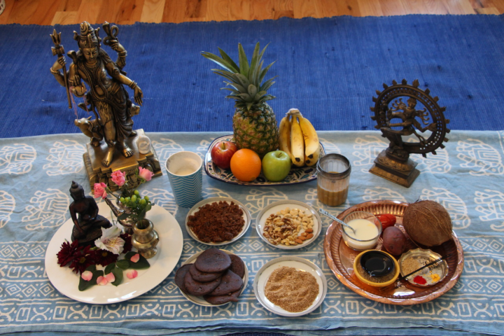
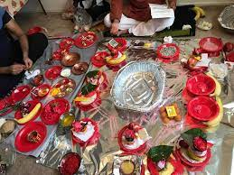

NWARAN

There are several varied naming conventions in Nepal. The names of children are generally announced by the elder most member of Nepali households. For Hindu Nepalis, children are named on the 11th day after they are born during a ceremony called ‘Nwaran’. A priest visits the home to give the child a name according to the baby’s birth details and corresponding horoscope.
Nepali names usually come from Sanskrit and Pali. Each name has its own significance and meaning. Some of the names are also reflective of the beauty of Nepal. For example, Himalaya is a common Nepali name which translates to snow capped mountains.In the Hindu tradition, the Nwaran is celebrated on the 11th day (for girls and boys) from the day of birth. This ceremony is performed to give a birth name to a child, according to their lunar horoscope, which is usually not the name by which they are known. Typically, a priest is invited to perform the ceremony at home, who finds the child's lunar horoscope from their birth details, as the mother is still recovering at home with the child. Until the mother and child are "purified" (from past birth, etc. in the religious sense), they should not visit the temple.One can also perform a Nwaran on the 21st or 41st day after birth, if for some reason if the ceremony was not observed. Some people also tend to perform the Nwaran ceremony on the 11th day.Before the Puja, the puja materials should be washed and kept clean and ready in the puja place. You can select a place for the puja, depending on the number of people you are going to call.

The puja should be done facing east or west. A carpeted area covered with a clean, washed cloth like a bed sheet, can be used; unless there is going to be the Havan (Homam) ceremony, in which case a fire-resistant floor is preferred.After the ceremony, the area can be cleaned up after sunset, or the next day. The fruits can be used as Prasad, whilst the Puja flowers and Paan leaves are spread in the backyard near trees. Kalash coconut, the Puja vasthra (cloth), the coins and the rice should be packed separately, and all other grains mixed together. These should be given, neatly packed, to the temple within 11 days; but the used fruits, flowers and pan leaves should not be taken inside the temple.